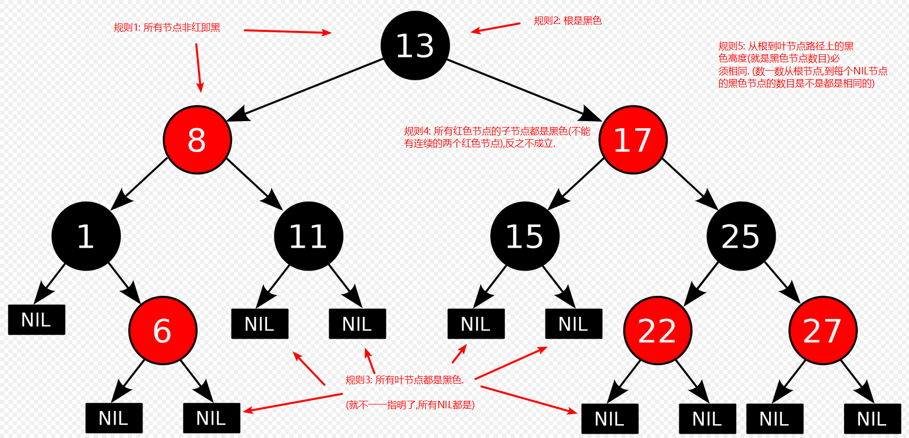

原文连接:https://www.cnblogs.com/xisuo/p/12044569.html
前言
上一篇博客介绍了[二叉树].二叉搜索树在树是平衡的情况下搜索、插入和删除的效率都很好,但是如果二叉搜索树是不平衡的那么它的效率就不那么令人满意了,而红黑树解决了二叉搜索树的这个问题,可以始终保持树是平衡(大致平衡)的.
阅读前须知:
- 如果您对二叉树不太了解,请移步[二叉树]
- 本文用到的评估红黑树效率的方法-- 大O表示法
- 由于红黑树的实现代码过于晦涩难懂,所以本篇博客只会通过通俗易懂的语言加上一目了然的图片对红黑树进行讲解
- 本文的侧重点是红黑树的插入过程
- 假定插入红黑树的值不会重复
1. 红黑树简介
红黑树是什么? 其实红黑树就是加了一些特殊规则(保持树平衡的规则)的二叉搜索树.
红黑树的两个特征:
- 节点都有颜色
- 在删除和插入过程中，保证这些颜色不同排列的规则(红黑规则)
当插入(或删除)一个节点时,必须遵守红黑规则以保持树是大体平衡的,红黑规则:
- 每个节点不是红色的就是黑色的
- 根节点是黑色的
- 所有叶子都是黑色(叶子是NIL节点或NULL). (NIL: NIL表示无值，任何变量在没有被赋值之前的值都为NIL)
- 红色节点的子节点必须是黑色的(从每个叶子到根的所有路径上不能有两个连续的红色节点),反之不成立
- 从根到叶节点或空子节点的每条路径,必须包含相同数目的黑色节点(也可称为黑色高度).
红黑规则的图解:

图1
FBI WARNING: 本文接下来给出的图例中将会省略规则3中的NIL叶节点, 特此强调
关于规则5空子节点的示例,可以看到下图中根到叶节点和根到空子节点的高度不一致,违背了规则5:
图2
下面是红黑规则的总结,重要结论->重要结论->重要结论,红黑规则确保了红黑树的关键特性：从根到叶子的最长的可能路径不多于最短的可能路径的两倍长。结果是这个树大致上是平衡的。因为操作比如插入、删除和查找某个值的最坏情况时间都要求与树的高度成比例，这个在高度上的理论上限允许红黑树在最坏情况下都是高效的(如果插入的数据是有序的,红黑树不会出现极端不平衡的情况,会自己修复)，而不同于普通的二叉搜索树。
是规则4导致路径上不能有两个连续的红色节点确保了这个结果。最短的可能路径都是黑色节点，最长的可能路径有交替的红色和黑色节点。因为根据规则5所有路径都有相同数目的黑色节点，这就表明了没有路径能多于任何其他路径的两倍长。
2. 了解插入过程前的一些热身准备
在了解红黑树插入一个新节点的时候都做了什么以前,有一些插入过程中用到的概念会在本章节进行讲解,如果你对变色、旋转有所了解,可以跳过本节.
首先红黑树新插入的节点都是红色的,并且红黑树是在插入数据的过程中对树进行平衡修复的,如果感知到违反了红黑规则,程序会进行自我修复以符合红黑规则,修复方法有且只有两种:
- 改变节点的颜色
- 执行旋转操作
接下来会对一下三个方面做出解释:
- 为什么新插入的节点是红色的?
- 改变节点的颜色?
- 旋转操作?
2.1 新插入的节点都是红色的
为什么新插入的节点都是红色的?不是黑色的?
主要有两方面原因:
- 不会违背规则5,从根到所有叶或空子节点的黑色高度不会改变
- 虽然有可能会违背规则4出现两个连续的红色节点,但是只有50%的几率碰上,并且就算碰上了,修复规则4也比修复规则5要简单的多(只需要几次变色和几次旋转就能修复规则4).
2.2 变色
变色..嗯就是变色,红的变成黑的,或者黑的变成红的. 至于什么情况下需要变色,怎么变色,需要具体问题具体分析,看完章节3就晓得了.
2.3 旋转
树左右两边的节点数量不相同的时候树就是不平衡的了,如果这时候想把树变为平衡的,就需要旋转.
旋转必须一次做两件事:
- 使一些节点上升,一些节点下降,帮助树平衡
- 保证不破坏二叉搜索树的特征.
二叉搜索树的特征: 任何节点的左子节点及其子树的关键字都小于该节点,而它的右子节点及其子树的关键字都大于等于它.
关于旋转这个动作的定义: 选择一个节点作为旋转的"顶端"(top),如果做一次右旋,这个"顶端节点"将会向下和向右移动到它的右子节点的位置,它的左子节点将会上移到它原来的位置.
以关键字值为10的节点为顶端,执行左旋转和右旋转:
图3
注意事项: 左旋转必须有右子节点,右旋转必须有左子节点.
关于旋转有一个情况要注意: 如果旋转的顶端节点有内侧子孙节点,那么执行完旋转操作以后,这个内侧子孙节点要断开与父节点的连接,连接到顶端节点上.
图4
如果内侧子孙节点是一颗子树,那么整棵树也一起移动过去.
3. 插入数据的过程
准备活动做完了,下面开始正题.
在红黑树中插入一个新节点的步骤和二叉搜索树有部分是相同的:从根开始,插入节点的关键字与当前节点的关键字进行比较,如果小往左走,如果大于等于该节点往右走,直到找到一个合适的位置进行插入.
不同点:
- 在向下比较的过程中需要变色
- 在向下比较的过程中需要旋转
- 插入新节点之后需要旋转
下面来概述一下红黑树的插入过程: 从根开始比较关键字的值,如果小往左走,如果大于等于该节点往右走(这是相同点),从根往下走的过程中一旦发现有黑色节点有两个红色子节点的情况进行变色,变成红色节点有两个黑色节点(这是不同点1),变完色有可能会违背规则4不能出现连续的两个红色节点,这时候需要再次进行旋转和变色(这是不同点2),最后找到合适的位置插入新节点,如果新插入节点的父节点是黑色就结束了,如果是红色又违背了规则4,那么还需要旋转和变色(这是不同点3).
现在不懂没关系, 3.1、3.2、3.3 三个章节会通过一个完整的示例,详细的讲述红黑树的插入过程.
图5
我们以往这棵树插入值为19的新节点为例
3.1 在向下比较的过程中需要变色
图6
变色原则:
- 在向下比较的过程中如果遇到一个黑色节点有两个红色节点,这时候要把它的颜色对调变成一个红色节点两个黑色节点.
- 如果这个节点是根节点,那么就都变成黑色节点.
图7
变色后:

图8
至于为什么要变色: 只要应用了变色原则,插入节点后的旋转不会造成树的上方违背红黑原则.
3.2 在向下比较的过程中需要旋转
变色后出现了连续的红色节点,这时候我们需要进行旋转和变色修复红黑树,我们声明X、P、G三个节点:
- X是P的子节点
- P是G的子节点
- X是G的子孙节点
图9
X、P是连续红色节点的情况违背了规则4,这时候就要看X与G的位置关系了,X与G位置的不同,修复的步骤也不同:
- X是G外侧红色子孙节点的情况,需要旋转一次,变色两次.
- X是G内侧红色子孙节点的情况,需要旋转两次,变色两次.
关于外侧子孙节点和内侧子孙节点位置的说明:
- 如果P是G的左子节点,如果X是P的左子节点,那么X是G的外侧子孙节点
- 如果P是G的左子节点,如果X是P的右子节点,那么X是G的内侧子孙节点
(如果P是G的右子节点,X是P的右子节点,那么X是G的外侧子孙节点)
回归正题,X是G外侧红色子孙节点的情况:
图10
X是G内侧红色子孙节点的情况:
图11
3.3 插入新节点之后需要旋转
终于到最后一步了,新节点插入后(X),要根据父节点(P)的颜色,和它与祖父节点的位置进行调整,共有三种情况:
- P是黑色,直接结束
- P是红色,X是G的外侧子孙节点
- P是红色,X是G的内侧子孙节点
P是红色,X是G的外侧子孙节点:
图12
P是红色,X是G的内侧子孙节点:
图13
以上就是红黑树插入一个新节点的完成过程.
4. 红黑树的效率
红黑树的效率与二叉搜索树相同都为为O(logN),红黑树的查找速度和二叉搜索树几乎一样,因为查找过程并没有应用红黑树的特征.只是额外增加了一些存储红-黑颜色的(boolean变量)存储空间.
至于插入和删除因为要加入一些变色和旋转,所以要比二叉搜树慢一些,但是效率同样也为O(logN).
5. 红黑树的总结，优缺点
优点:
- 查找速度和二叉搜索树相同
- 如果插入的是有序数据效率不会慢到O(N),这点爆了二叉搜索树
缺点:
- 增、删略慢于二叉搜索树
- 代码实现过于复杂...
6. 实际中的应用
Java中的TreeSet、TreeMap、Java8中的hashmap、Linux内核,面试官的灵魂拷问等等很多地方都用到了红黑树.
7. 最早的平衡树AVL树
AVL树是最早的平衡树,它是由AV(Adelson-Velskii)和L(Landis)两个发明者名字的缩写命名的.
AVL树自平衡的方式: 在节点中保存左右子节点的高度,如果高度差大于1就进行自平衡(旋转).
插入过程:
- 插入之后,检查新节点插入点所在的最低子树的根,如果它的子节点的高度相差大于1,执行一次或者两次旋转使他们的高度相等.
- 然后算法向上移动,检查上面的节点,必要时均衡高度.这个检测检查所有路径一直向上,直到根为止.
AVL树的效率:
- 查找的时间复杂度为O(logN)
- 插入(或删除)由于需要扫描两趟,一次向下插入,一次向上平衡比,所以效率不如红黑树高.
结论: AVL树因为插入(或删除)需要扫描两趟所以效率不如红黑树高,也不如红黑树常用,了解即可
8. 下期预告
红黑树的知识总结就到这里了,下一篇博客会更新2-3-4树、B-树(不是B减树是横杠)、B+树的知识,还有红黑树、二叉树与这些树的对比等内容,敬请期待.